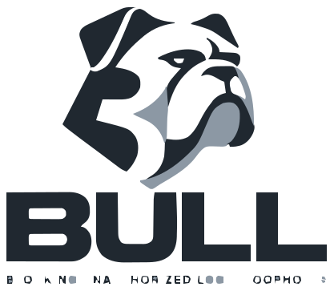

The agent asks
“Read this file.” “Run this program.” “Contact this service.” A proposed action is treated as untrusted input.
An AI agent can read a page, write a file or suggest a command. BULL is being built to keep those suggestions from becoming permission to do anything it wants.
It is an open-source project that puts explicit checks between an agent and the tools you give it. Not another chatbot. Not a promise that AI is suddenly risk-free.
See how a decision worksExperimental software · Linux enforcement · Independent audit still needed

A guard dog for the tools.
Not a replacement for your judgment.
Giving an agent a job often means giving it access: a project folder, a shell, a service or another agent. The difficult part is keeping that access tied to the job.
An instruction in a webpage is still just a webpage. A request from a child agent is still just a request. Neither should be able to grant itself access to your credentials or computer.
That is the idea behind BULL. The project starts with explicit permission checks, adds memory of suspicious behavior across a session, and connects those decisions to a separate Linux execution boundary. The MicroVM work adds another layer under development, not a finished product claim.
The bulldog fits the job: watch the boundary, make the reason for a decision clear, and do not let a convincing request rewrite the rules.
Project rationale and scope: repository overview and security design.
“Read this file.” “Run this program.” “Contact this service.” A proposed action is treated as untrusted input.
What permission does it really require? Who granted it? What influenced it? Does it fit the agent’s authority and recent behavior?
An allowed request is not a free pass. Real execution needs a configured host, an approved command and the required isolation controls.
ALLOWThe policy permits the request.
SANDBOXIt needs a restricted environment.
REVIEWIt needs additional approval.
DENYIt must not proceed.
The website demonstrates the checking step. It does not start a Linux sandbox or a virtual machine.
“Implemented” means there is code and a defined role for it. It does not mean a feature is independently audited or ready on every machine.
Paths are normalized, the required capability is derived from the action, and requests are checked against explicit grants and parent authority. Policy · Request normalization
The session guard can tighten decisions when behavior shifts. Host-issued security domains limit children to their parent’s authority and share behavioral history across the agent family. Session guard · Security domains
The host runtime binds approval to the command, admits a project snapshot, and applies namespace isolation, syscall filtering, filesystem restrictions and resource limits. Missing production prerequisites must fail closed. Deployment requirements
Host-side brokers scope secret use and outbound access. Audit records are hash-chained, with authenticated remote anchoring components. Production credentials and an actual anchor service still need provisioning. Secrets · Network · Audit service
The Linux x86-64/KVM launcher, immutable input-image builder and host regression tests exist. A persistent production engine, complete guest integration and real-KVM release evidence are unfinished. ARM and macOS/HVF remain disabled or experimental. Exact release gaps
The deployment copies the repository’s policy modules into a browser Python runtime and records source hashes. It checks proposals without executing them. Connecting a hosted model is optional. Build evidence · Demo adapter
The agent has project-read permission and requests a file inside that project. That can be allowed without granting shell or credential access.
Reading the page does not grant it authority. The policy hard-blocks credential access influenced by untrusted external content.
Spawning an agent does not create new permission. A child cannot exceed its parent’s authority.
These are illustrative policy cases, not claims about attacks blocked on your machine. Try the corresponding presets below.
Choose an example and see the decision, plus the reason behind it. The demo uses BULL's actual Python policy code. It checks requests; it does not run the proposed command or protect your computer.
Loading the demo downloads Pyodide from jsDelivr. Test requests stay in this tab unless you choose the optional hosted-model connection below. NOT LOADED
{}Configure an OpenAI-compatible hosted model endpoint.
No model proposal received.
| Time | Agent | Action | Capability | Decision | Risk |
|---|---|---|---|---|---|
| No decision events yet. | |||||
These results come from the build that published this page. They are not a claim that every deployment is safe. The browser self-test runs only after you load the demo.
loading…
Passing CI does not mean BULL is vulnerability-free.
TLA+ checks the modeled state machine, not the full Python/Linux implementation.
Host certification proves requested controls were observed on that host; it is not a proof against kernel or hypervisor compromise.
BULL has not undergone an independent third-party security audit.
It is not a universal safety guarantee. The host administrator, trusted BULL code and kernel remain part of the trusted system. This project does not claim protection against a compromised kernel or hypervisor, every side channel, or harmful actions that still fit permissions you explicitly granted.
It is not plug-and-play protection for every agent. Integrators still have to route sensitive actions through the runtime and configure the real host boundary. First-class agent adapters and a polished persistent MicroVM session remain work to do.
A green test suite is evidence, not certification. The formal models cover their modeled state machines, not the entire Python/Linux implementation. An independent third-party security audit is still needed.
Start with the source and the security boundary. Use a disposable development environment, not sensitive workloads.
git clone https://github.com/Anharmoniclabs/BULL.git
cd BULL
python3 -m venv .venv
. .venv/bin/activate
python -m pip install -e . pytest
python -m pytest -q
bull verifyLinux/macOS shell syntax. Installing the package does not activate protection. bull verify --production is a separate check for a host whose required controls and secrets have already been provisioned.
The approved mark is now shared by this website and the project documentation. These lightweight SVG assets were traced from the supplied logo sheet; the small descriptor remains editable text.
{kind=link}
{kind=link}
{kind=link}
{kind=link}